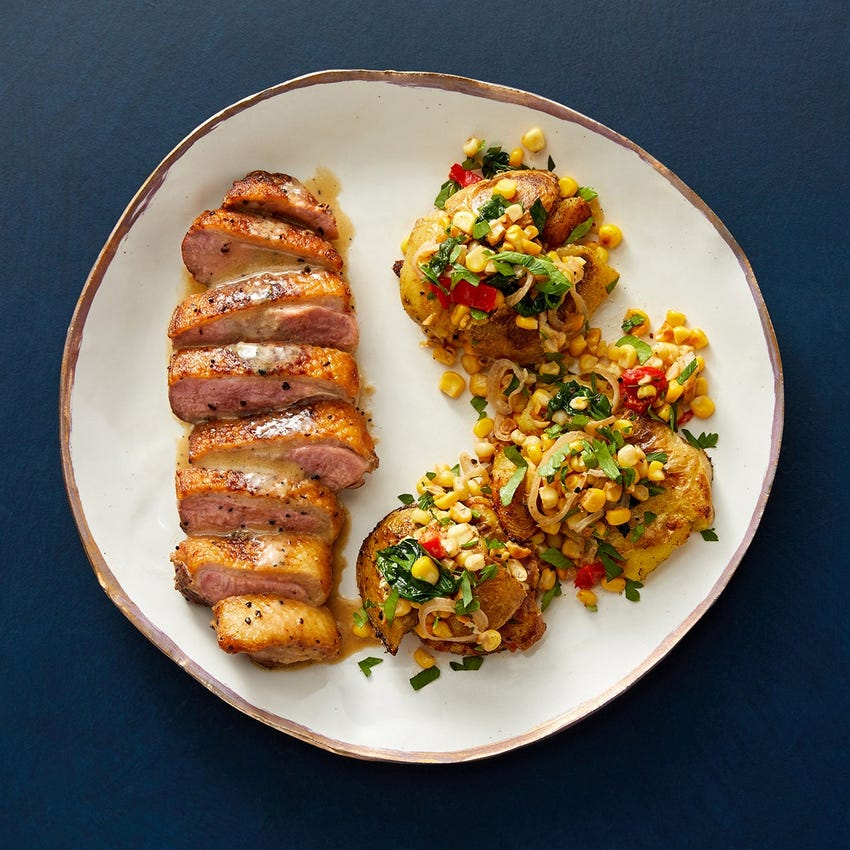

Now this is just another rip straight outta the blue apron cook book.
Enjoy.

Ingredients
2 Skin-On Duck Breasts
¾ lb Golden Potatoes
2 ears Of Corn
3 oz Baby Spinach
1 bunch Parsley
⅓ cup Chicken Bone Broth
1 Tbsp Red Wine Vinegar
2 Tbsps Butter
1 Tbsp Dijon Mustard
1 Shallot
2 Tbsps Crème Fraîche
½ oz Sweet Piquante Peppers
Cook & smash the potatoes
Fill a medium pot 3/4 of the way up with salted water; cover and heat to boiling on high.
Wash and dry the fresh produce. If necessary, halve any potatoes larger than 2-inches in diameter.
Once boiling, add the potatoes to the pot and cook 16 to 18 minutes, or until tender when pierced with a fork.
Drain thoroughly and transfer to a sheet pan (or work surface). When cool enough to handle, using the flat side
of your knife (or the bottom of a small pan), carefully smash each cooked potato once to flatten.
Cook the duck
Meanwhile, pat the duck dry with paper towels.
Season with salt and pepper on both sides.
Heat a medium pan (nonstick, if you have one),
on medium until hot. Add the seasoned duck,
skin side down, and cook 9 to 11 minutes, or
until browned and the skin is crispy. Flip and
cook 4 to 5 minutes for medium (145°F), or until
cooked to your desired degree of doneness.*
Transfer to a cutting board, skin side up, and
let rest at least 10 minutes. Carefully drain the
duck fat into a small bowl.
Wipe out the pan.
Prepare the remaining ingredients's
Meanwhile, remove the husks and silks from the corn;
cut the kernels off the cobs.
Peel and thinly slice the shallot.
Roughly chop the peppers.
Roughly chop the parsley leaves and stems.
Crisp the Potatoes
In the same pan, heat 1 tablespoon of the reserved duck fat on medium-high until hot.
Add the smashed potatoes. Cook 1 to 2 minutes per side (if the pan seems dry, add the
remaining duck fat before flipping), or until browned and crispy. Transfer to a plate
and immediately season with salt and pepper.
Cover with foil to keep warm. Wipe out the pan.
Cook & finish the vegetables
In the same pan, heat 2 teaspoons of olive oil on medium-high until hot. Add the corn kernels and sliced shallot;
season with salt and pepper. Cook, stirring occasionally, 1 to 2 minutes, or until slightly softened
(be careful, as the corn may pop as it cooks). Add the spinach. Cook, stirring frequently, 1 2 minutes, until wilted.
Transfer to a bowl; add the crème fraîche and chopped peppers. Season with salt and pepper; stir to combine.
Wipe out the pan.
Make the pan sauce & serve your dish
In the same pan, heat the broth to boiling on high. Once boiling, reduce the heat to medium-high.
Add the butter, vinegar, and mustard. Cook, whisking constantly, 1 to 2 minutes, or until the sauce is thickened.
Turn off the heat. Taste, then season with salt and pepper if desired.
Flip the rested duck to be skin side down on the cutting board (to easily cut through the skin).
Thinly slice crosswise. Serve the sliced duck (skin side up) with the crisped potatoes and
finished vegetables on the side. Top the duck with the pan sauce.
Garnish the vegetables with the chopped parsley. Enjoy!